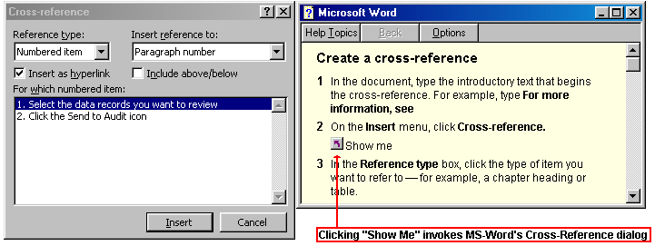
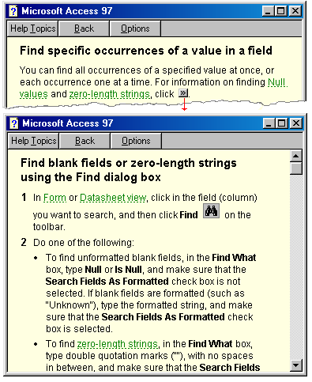
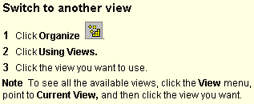
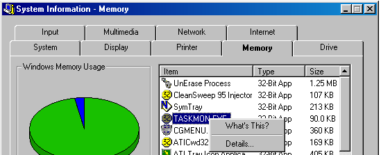

Download Word version (zipped, 62Kb)
Writing help for many years has been considered a black art. There are several reasons why people shuddered when asked to write help. There was virtually no real documentation available to teach you how to use the tools used to create help. The tools themselves were not very helpful and in the beginning were crude. Also the people writing help typically didn’t have the right mindset for attempting to write help systems.
Introduction
Today the tools have advanced leaps and bounds to the point that many will write most or all of the help that you need in an application. For instance, Time2Help is a help authoring tool designed to write help for Delphi projects or for groups of related units in a folder. You use a wizard to tell Time2Help which Pascal files to read, in turn it generates either conventional WinHelp or HTML file. For user online assistance there is a product called True Help by APEX. Unlike many modern help-authoring tools True Help approaches help authoring in a WYSIWYG way, hiding all the nasty formatting from the author. In 99% of all help-authoring tools you need to deal with knowing all kinds of formatting commands to structure a help file, this is not the case with True Help - just about anyone can produce a quality help system with little knowledge of the tool. Objective Software Technology has a Delphi component library, which includes two items for placing help into your applications. The first is a hint editor and the second provides methods to develop user help while in Delphi’s IDE. Note: At the end of this article (part 2) there will be a list of tools, which you can choice from for actually writing your help. For now I want to focus not on the mechanics but what is behind the tools.
Still with all of the technological advances in help authoring tools there is still a cloud of darkness, which hovers over us. The major reason for this is, most people writing help do not know how to properly go about the process of designing a help system. To be more specific the majority of today’s help authors are writing help as a second job. I would guess that the programmer of an application is the one writing the help. There is nothing wrong with this except that programmers are generally very busy writing code and creating help is a secondary evil. Also programmers generally see things differently than how the users of a program see them. A good way to think of the differences is like the different ways men see things to how women see things. Programmers are from Venus and users are from Mars. If you need to develop help for components used to write in the Delphi environment then mindset is not a problem, we are generally on the same playing field to the way we think. The problem of course is when the line is crossed to user help for an application. So, if you are writing for programmers your troubles are over right. Not really, you may think alike but there are still rules to follow, structure and flow are essential to how often a help system is used.
There have been many studies surrounding how users make use of online documentation. In the majority the findings are, users first go to the index and if after 20 seconds can not find help will become frustrated and exit help. There are two core problems which exist in just about all major help system; lack of proper structure and wrong mindset for the documentation.
Providing help systems which users will use a great deal of planning must be done from the beginning. Forget about the tool, which will be used to write the online documentation, as stated there are many qualified tools in just about every price range.
We have identified the most common problems facing you, using the basic guidelines presented below with practice you will learn how to write effectively for your intended audience.
Do you know your users?
Most programmers sit in a cubicle never to venture out to speak with users. They rely on the analyst who has scoped the project. If company policy permits, get out and talk with your users and if not, talk with the analyst about the users. Another thing, which will help, is to find books that relate to the industry you are writing for. I will take time to sit down with users at their desk or join them on coffee break, talk about various topics (work and non-work things) to see how they see things.
Lay Out a Solid plan/Design Process
Just as you would not sit down and start writing code you should not do the same when writing online documentation. Here is a list of things that you might consider when kicking off your project of writing help.
Envision
Either by yourself or with a team, sit down and abstractly work out what the help system should do. Should the help system be based on textual lookups or using graphics? May be both a justifiable spot in the help system. Other considerations are HTML or WinHelp formatting. Would videos be useful to the audience using the help system? Review help systems from other applications don’t be limited by your lack of technological constraints. It is better to envision than too not and simply play it safe.
Analyze
You need to know what the contents will be. You will only know this by analyzing the needs and expectations of the online documentation.
Design
Sketch out the high level framework. For example, will the project need to have the basic elements i.e. table of contents, index and browse sequences. Should graphics be used to direct users or simply text navigation.
Refine
Constantly review how things are moving along. If needed repeat the steps above until you and or your team (and most important the intended audience) are satisfied with the results.
Implement
Merge the help with the intended application and make it available for real life use. Make sure to have the help system tested well!
Support
Promptly fix problems. Problems will come from two major places, missing topics and inadequately written topics. Many times users will fail to find what they are looking for and not tell anyone. I strongly suggest two things, have a help topic which provides the user with a place to tell about problems and secondly send out a questionnaire asking users if there are any problems with the help system.
One person or team
If you do not have the luxury of working in a team environment while developing help it is essential to either enlist proof readers and or beta testers. If the application for which help is being written for is something you have limited knowledge of then having the input from these people will assist you with a better understanding of the users mindset. If you can get a team together for writing help by all means try and get non-technical people involved. Enlisting average and expert users will help address the needs as they see it.
When working in a team:
- Assign a team leader, this person is similar to a project leader. They are responsible for setting up meetings, assigning task and overseeing testing. If there are plenty of resources available then this person should not be writing topics, instead they should be the one maintaining the help project. This can be an overwhelming task in and by itself. Typically most help authoring tools are bound by the operating system rules. Take for instance opening a document by more than one person, in Microsoft Word only one person can directly edit a document while others can only open the document in read only mode. This makes it difficult to update the document.
To circumvent this problem experienced help authoring teams will devise a work around for accessing a document used by many at a single time. We will get into the "how to" later on. Just keep in mind that this involves more than a short period of time to accomplish.
- Decide who will be writing topics. If there are several help authors then the team will need to decide on guidelines for the formatting of topics. For instance, what font to use, colors, indentation.
Most help authoring tools provide what is called a style sheet. Style sheets provide methods to assist in standardizing the formatting of text within documents, which contain help topics. One of the first things which needs to be done is to decide on the actual styles used.
Suppose that there are three help authors, two of them have perfect eyesight and the third has impaired eyesight. Most likely if the issue of styling is not discussed up front the person with impaired vision will use a larger font than the other two. Perhaps all three of the authors like a different font, this might not seem like a big deal but even the smallest of things can confuse our users. All topics within a help file should appear as if one person wrote it.
Important Note: Make sure that the topic writers and testers communicate! The topic writers can gain loads of information from the feedback that only testers can provide since they have actually used the application.
- Testers, a good team leader realizes the importance of enlisting testers immediately. They should be involved with testing the application besides the help system. Simply having a person reviewing the help system may not bring all of the issues to the surface. In some cases this is not even possible i.e. there is no F1 help, only "What’s this help".
Decide a Strategy
Once your team has been formed the team leader should have a general kick off meeting which discusses the overall strategy of the project. Topics to cover should include the following:
- What type and how help should be accessed. If you look at most common online help files they provide access via a "table of contents", indexes, "What’s this help" and control sensitive help.
It has been proven that in most applications users tend to ignore "Table of contents" in favor of searching for help through the index tab of a help system. "Table of contents" are usually used by novice users of an application and are typically ignored shortly after they become familiar with the application. The average user will know that if the index system provided is well organized that this is the fastest method to gain assistance. "What’s this help" is widely used when there are items, which may only need a short explanation to figure out what their use is.
Important note: The best method of dealing with indexing is to delay creating them until all the help topics have been completed. This is also a good idea for "browse sequences". Creating an index for your online help requires a tremendous of thinking prior to implementing it. The last help project I worked on ended up with over two thousand keywords which made up the index. It required four people working five hours per day for six days. The end result was that users could find answers to their questions in less than thirty seconds.
- Overall windowing style. Should the help system use more than one window to show help. Take for example how Delphi uses two windows to display component help. Many times when an example needs to be shown it is nice to see both the example and descriptive text at the same time.
- Should graphics be used? Humans usually will recognize images then text. To effectively use graphics a good artist will be needed or a large collection of pre-done graphics library will be needed. Also depending on how graphics are to be used many involve costly hardware and software additional to the help-authoring tool. Other considerations to keep in mind are; monitor resolution and disk space. If the images are not created properly for the screens being used then they may appeared blurred or not at all. Although disk space is typically not a problem for most companies it may be with some people. I suggest you fully investigate what it entails to use large amounts of images before jumping the gun and finding out you are creating a problem rather than solving one.
What it takes to make a winning help system
The first realization is that help should encompass an entire application. Simply supplying a help file along with Tool Tips may not be sufficient. How many times do you rely on searching through the table of contents or reading tool tips? Well translate this too the users of your application. Consider using one or more of the following:
- Helpful hints in status lines
Place a status bar on each form and direct useful information into them. For instance, create a short hint for controls, which will be the tool tips, and the long hint for the status bar.
- Tool Tips
In Delphi these are called hints and are only displayed for a short time. Besides placing instructions into them you can put other useful information into them. For example, we have an application, which shows formulas in the tool tips. Help is provided via the statusbar or by pressing F1.
- What’s this
By default any form using this type of help must be a dialog. This most likely will limit their use in some applications. Although there are methods to get what’s this to work on sizeable forms, it is best to follow Microsoft’s lead in using this type of help on non-sizeable forms.
Note: Many of the help authoring tools provide visual aids to assist in writing this type of help. Unfortunately the ones I have seen do not work with Delphi. RoboHelp will only do Visual Basic and C++ visually. RoboHelp does not limit or restrict you from using What’s this help in any other fashion.
- Agents
If you have worked with Microsoft Office then you have seen them. They are the cute little images, which do silly animation. Microsoft also has more sophisticated agents which can be controlled via automation. The downside to using agents is twofold, more time to develop and they also leave more room for errors if not tested properly.
Other elements that help to make a winning help system:
- Easy access (minimal mouse clicks)
- Answer the user’s question the first time (not always realistic but something to strive for)
- Easy to navigate (a good example is Dell’s support WinHelp file)
- Accurate, well written and concise.
- Access to more information without disturbing the current topic.
Minimization
Back in the seventies user manuals were very cold in nature, in the eighties it was assumed that users would read a lot, assumed users would not make errors. Minimal instruction provides information to users in a different light. I remember when Windows95 first hit the streets, help seemed sparse and I didn’t like it all that much. As time went by I appreciated what I first disliked, that is condensed help. Seems that it works after all. To write in this style you first need to understand that help need not be written for the novice user, instead you need to gear help to the everyday user.
Example 1
Printing form 100, the audit reporting form.
With release 5.01, the Audit Department no longer requires form 100, the Audit reporting form, because we can now review the data online.
However, you must send the data electronically to the Audit Department when it is ready for review.
Example 2 (not using the best images)
To send the data to the Audit Department
- Select the data records you want to review
- Click the Send to Audit icon
In example one the help author is providing more information than needed. The second example provides only the instructions needed to complete the task at hand. If further assistance is needed for step one (Example 1) the user would click on the image to obtain the information. Many applications do the same thing, just a different image.
In step two (Example 1) pressing the pencil image would send the data to the appropriate location. To further assist the user the image within the help system could be programmed to carry out the task. You would of course explain this to the user. Microsoft Office products do this for many help topics. In the example below pressing the image in step two invokes the insert action in Word.

Users learn best by doing, by having to think, by practising and by solving problems.
In any event minimization has been proven to work in many test cases. In one study a minimal manual was put up against a full fledge system manual. Here are some results from the test.
|
Minimal Manual |
System-style Manual |
|
45 pages total |
More than 180 pages |
|
Hands on after four pages |
Hands on after 28 pages |
|
Users were creating documents by page 7 |
Users were creating their first documents on page 70 |
|
Had short modular sections with relevant user task |
Users were expected to go through all parts of the manual |
|
Supported error recognition and recovery |
|
Users with the minimal Manual:
- needed 40% less learning time.
- showed 50% more successful performance on basic task.
- were more than twice as efficient as users with System-style manuals
So as you can see, using this method does work. Granted minimization will not work for every audience: you need to do research on the users first.
Layering
Layering provides users with more than one channel for giving information out. Combined with minimization techniques (covered shortly) this is can increase the usefulness of your help system. Rather than go into great depths to explain layering let’s use an everyday example. Fire up your internet browser and do a search, the results usually (depending on the search engine) show a one line description. Placing your mouse over a line will (in most cases) display more information concerning the result. Some search engines will provide a button that if clicked with provided expanded information on the item. In essence they are layering information in a very simple format.
Things can become more complex when applying layering to an application. In the above example it does not take much to quickly learn the single clicking the mouse on a line will take you to the web page. In an application simple or complex we are not always sure of the user. The user could be someone who uses the application everyday, once a week or maybe once a year. Secondly are there many turnovers in employees? Many things need to be considered before deciding on how to apply layering.
If the same user(s) always use the application then do not write for novice users, instead write at a level of the everyday user. Provide an additional layer for new users. If the user(s) are changing a lot then we need to write at a different level obviously. Suppose you do not know how the average user is! Dell computers (and others) supplies a help system which allows the user to decide on which path to take. Each image directs the user to a different help topic.
Another example would be in Microsoft Access. Shown below in the first image shows a help topic with high level instructions, the second help topic is called from the first topic and has detailed information for the first help topics instructions.

Remember as in techniques used for writing help files, know your audience. If you write layering incorrectly then people are not going to use the help system very often. Study other application help files to see if layering was used and if possible who the user is for the application.
Another decisive element is minimization, here you supply the minimal amount of instructions to complete a task. You will need to decide if this will work for your application. If the same users operate the application most of the time then minimization would be written for them rather than novice users. Here is an example taken from Microsoft Outlook:

If the typical user was say part-time then you should add buttons on each step to supply more detailed help. Another alternative would be to train the part-time users ahead of time.
Road maps to information
Your help topics are only going to assist your users if they are easily assessable. This means that you need to create road maps to your help topics prior to actually writing them. What needs to happen first? This depends on what you are writing help for, let’s examine a typical application which contains windows are standard controls.
Using a project management tool such as Microsoft Project, a word processor or a database,properly set up to keep track of the following:
Write down the name of each window in the application. Determine the tasks you can perform in each window, such as creating, updating, or customer orders Review the outlines with your help team, developers, system analysts, and project manager. Get input and feedback from each. Go through the application screen by screen and field by field. Count each field in each window. For simple fields that don't require much explanation, add five minutes. For more complicated fields, add 15 minutes. Add up the minutes and insert your estimate into the project. I know that RoboHelp provides functionality to assist in managing a help project. Be sure to include dependencies. In other words, window 1 must be complete before you begin window 2. If you have more than one writer, divide the parts of the application logically. Don't forget to include time for subject matter expert (SME) review as well as editing review. Allow up to a week for each review, depending on the size of the project and the availability of resources. its a good idea to have your developer(s) review the help prior to editing. There's no need to edit incorrect information. A good project plan can take anywhere from a few days to a few weeks. Make sure management understands this before you begin.
How will help be presented?
Press F1 to display a help topic for a specific window
Although this may appear simple it can get complex very fast. You will need to take into consideration that all-necessary information can not be displayed within a single help topic. For instance, your strategy requires the use of Minimization and/or layering. Another factor (which encompasses the later) would be links to other topics, which would possibly popup windows for definitions of word(s) or phrases. We also need to consider related topics and See Also topics. All of these issues need to be addressed prior to writing a single topic.
Suppose you are writing online help for an application, which has topics, which will be used many places. You need to decide if it will be used as a typical help topic (has a non-scrolling region) or a "popup" window style. A topic formatted with a non-scrolling region will not display the embedded text when called as a popup. Secondly if you are working in a team environment without up front planning then two help authors may end up writing their own version of the topic. The end result is, you will confuse the user and possibly have an unpolished appearance to the online help.
If the proper planning is done prior to sitting down and writing topics it should be easy for the intended audience to find assistance for what they pressed F1 for in the first place.
What’s This Help
This style of help usually can not stand on its own. It supplements F1 help and index help by providing help specific to a specific control within a dialog style window. One of the main drawbacks of What’s this help is that without jumping through hoops you can only use it with dialog windows. This is not a limitation imposed by Delphi but is from mother Windows. To circumvent the inability imposed by Windows you can either write code, which monitors the keyboard, say for Shift-F1 or create popup menus which manually invoke a popup help topic as normally done with What’s this help. My point is, you will need to coordinate the process with the developer and other help team authors.
Example of a sizable window providing pseudo What’s This Help by means of a popup menu:

By clicking on "What’s This?" the programmer would do something like this in response to the mouse click:
WinHelp(Handle,PChar(Application.HelpFile),HELP_CONTEXTPOPUP,MY_MAPID);
Some help-authoring tools provide visual tools to create "What’s This" style help e.g. RoboHelp
Which in turn might display the following

Of course if up front planning was not done the programmer may not have sufficient time to code for this help. If the help team does not write the topic as a popup then only the help topic’s title will display or no title if the title is hidden (more on this in part 2 of this article).
Search for help via the help file’s index
Most users depend on freeform searches through application help files i.e. the index tab of a help file. It is imperative that you include an index in all of your application help files. Without one you are doing your users an injustice. Depending on the project plan on devoting many hours to this part of creating help. You may even enlist someone within the company who is proficient with the English language. Another person may be needed who knows how the users think which will be using the application. Neither of these people needs to be trained to write help, simply use their skills and knowledge to map out the outline for the index page.
When I do indexing we organize a meeting with all key players. We start off by thinking of key words, which will be relevant to assisting in finding help topics. Each word is placed on a sticky note piece of paper and placed on a wall. Next we organize them into categories followed by disposing of ones which will not be of any real use. Once this is done they are keyed into a document, and reviewed once more. After reviewing them a person is assigned to pairing up the key words to help topics. Another review followed by using the help-authoring tool to create the keywords for the help index. Finally testers are alerted that they can use the index and provide us with feedback on how well they worked or failed to assist in finding information. Upon their feedback changes are made and the testing is done, repeating this cycle until we are satisfied for the applications initial release. During the first several weeks users are asked for their feedback to how well they could find items in the help file cased on indexes. If there are problems we reassess and add/delete/change index entries as needed.
How to implement:
To add index entries into the index tab of help files we use what is called a K-footnote. Just about every modern help-authoring tool today has methods built into them, which make the process very simple. Learn to use this feature in your tool. When creating words for the index tab you may want to group several index entries into categories for example:
Add
Orders
Customers
Inventory
In conjunction with K-footnotes there is a macro called KLink which groups K-keywords into groups which when clicked in WinHelp invokes the Topics found dialog. Again how this is implemented is specific to your help-authoring tool.
Note: Many times you will want to group topics together but not display them in the index tab. This can be done using A-footnotes and a macro called ALink.
Detour: Creating Help for Multiple LanguagesIf you will ever build an application for more than one language, there are some important considerations:
- Select a translator well in advance of when you need to start the translations. Get familiar with the translator's processes, find out their typical schedules, and get the names of key contacts.
- Get firm commitments from whoever is driving your project on which languages are required. Also, make sure they request specific languages. (Do they want Latin American or Castillian Spanish, Simplified or Traditional Chinese, etc.)
- Write the English text so that it is easier to translate. Make your terminology consist, avoid hard-to-translate jargon and idioms, and find ways to streamline text. The December 1999 issue of STC Intercom has a good article about this, "Nitpicking Cuts Translation Costs."
- Don't have the translators start work until the English-language text is finished. Changes in the English text also need to be made to the translations, and that can run into extra cost and confusion.
- Don't assume that everything is all right once you put your manual in the translator's hands. Keep track of which files you give to the translators, get commitments from them about the milestones they use in their work, and make sure you get all of the deliverables you need. At my previous job, we had terrible problems with translators losing files and not committing to schedules.
- Let the translators know what should be translated and what should not (hidden text, $ and # footnotes, etc...).
- Use experienced technical translators who will be likely to understand the application your help file documents.
- Provide the translator with a glossary of technical terms relevant to your application up front (even if only in English).
- Demonstrate your application to the translators. Translating is a lot like putting something in other words, and it gets scary when whoever is re-wording doesn't understand what he/she is trying to say.
- Ask the translator to start translation with the titles and paragraph headings. Such text is often referenced elsewhere and needs to be translated consistently.
- If your project involves more than one help file, ask the translator to complete work on one, get it back to test it, and then give feed back to the translator about what he/she ought to do differently.
- Resist the temptation to fix all the errors that are introduced by the translation process yourself. Let the translator learn the hard way and next time use the same translation team.
- Work with the translators directly even if you hired a translation agency to get the project translated.
Tips re Non-ASCII Characters
German text will typically expand to 130% - 140% of the English text. This may become an issue if you've got very large popups. If the localised text is too large for a popup window, the compiler won't complain, but the text will be truncated.
Bear in mind that screenshots will also typically be larger than the English. This may affect your current layout. It may also be a problem if your help system currently just about fits on a single disk.
You shouldn't have any issues with extended characters within the topic files. You may run into problems if your topic titles are very long, or if you have a lot of K footnote text.
However, the .HPJ is something of a strange beast. Microsoft - in their wisdom - have made the file ANSI for the most part, but the TITLE= entry is ASCII. Thus, to see any extended characters in the HPJ correctly, and to have them properly displayed by the help engine, you need to edit the HPJ with both an ASCII and an ANSI editor.
Thus, if you have a u-umlaut in one or other of your copyright, citation, button label, or window title strings, you should edit the file in Notepad and enter the character Alt-129. The character will be displayed correctly in Notepad. Save and close your file. If you also need a u-umlaut in the TITLE string, open the file in a DOS editor, e.g. EDIT, and enter the character Alt-129. The character will be displayed correctly in EDIT. Save and close your file. Recompile your help file, and all your extended characters will be displayed correctly.
To Be Continued
Stay tuned for part 2 of "Demystifying Help" which will cover the following topics (some may not make sense or have meaning to you but are very important to creating help).
Things to cover:
| Secondary windows |
Non-scrolling regions |
| Linking Topics Using Jumps |
Hotspots |
| Table of Contents |
Related Topics |
| PopUps/definitions |
Browse sequences |
| Macros |
Customizing help menus, adding custom buttons |
| External help files/Creating links between files |
Multiple help authors on one project |
| Using multi-media |
Help author's role with programmer (linking topics to an application’s UI) |
| Cascading style sheets |
Tools (RoboHelp, Help and Manual, True Help, Time 2 Help, ABC library, HTML Help Kit for Delphi) |
| Using HTML help in your Delphi applications (easy and hard methods) |
Debugging help (missing topics, duplicate topic id) |
| Various tips and tricks |
Help authoring web site list |
|
|